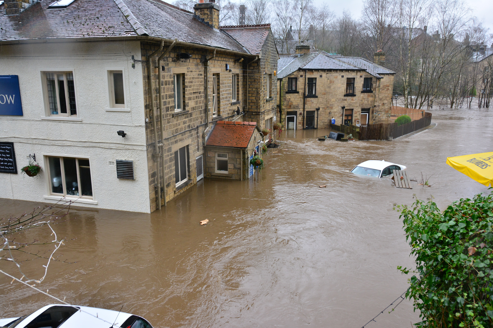

Pacific Northwest Heatwave
In the Pacific Northwest and southwestern Canada experienced a weather phenomenon called a "heat dome" where an area of high pressure acts like a lid on a pot and keeps heat trapped over a specific region. Scientists say the unexpected heatwave that killed hundreds in late June would have been "virtually impossible" without human-caused climate change. Both plants and animals also suffered from the extreme heat. Scientists say the punishing heat cooked billions of shellfish alive.
Colorado River Megadrought

The US declared a water shortage on the Colorado River with two of the nation's largest reservoirs, Lake Powell and Lake Mead, drained at alarming rates. While the region would have experienced a drought regardless of human influence, scientists say that climate change is making it worse than it's been in over 1000 years. Brad Udall, senior water and climate scientist at Colorado State University, said that the West should prepare for more shortages as the climate crisis intensifies.
Hurricane Ida

Hurricane Ida moved through New Orleans to New York at quick speeds, but the most dangerous part was its rapid intensification. The hurricane's winds increased by 60 miles per hour in a day. To give context, a hurricane's winds usually increase by at least 35 mph in under 24 hours. Category 4 Hurricane Ida destroyed homes, uprooted trees, and cut power to more than 1 million residents in Mississippi and Lousiana. Ida showed us how climate change is making hurricanes more dangerous, scientists expect that future hurricanes on average wil move slower on land, which would dump more rain on a location and causing extreme flooding.
California Dixie Fire
The California Dixie fire was the second largest in the state's history. It burned half a million acres of land and some 400 homes. Last year's wildfires immediately threatened homes and businesses, and also produced air pollution. The fire surpassed the Bootleg Fire as the largest fire in the US in 2021, charring nearly a million acres. High-level winds also wafted smoke from the West's wildfire streching from the West Coast to New York City. No matter where you were, you couldn't avoid climate change.
Greece Heatwave
The prime minister of Greece called it the country's "greatest ecological disaster in decades" when Greece's worst heatwave fueled deadly wildfires that burned nearly 250,000 last year. The wildfire killed about 80 people in Algeria and Turkey, while Italy and Spain were also ravaged by uncontrollable fires. Scientists say that the Mediterranean Rim is a hot spot for climate change with the worst yet to come.
European Floods
In July, Germany's worst flooding killed 165 people after heavy rainfall thrashed the country along with other European countries like Switzerland, Luxembourg, the Netherlands, Austria, and Belgium, where another 31 people died. A warming climate increased the likelihood of the extreme two-day rainfall behind the floods by about 20%, the WWA say. Scientists say that for every degree that Earth warms, the atmosphere can hold about 7% more moisture.
French Frost Ravage
In April 17, 2021, French vineyards were devastated when a freeze with temperatures as low as -8 degrees celsius descended on the region. Winemakers across France also faced similar devastation, some tried renting helicopters to push warmer air towards the ground, many lit candles or fires in order to try to warm their vineyards. The frost wiped out nearly a third of the country's grape harvests, causing up to 2 billion euros in damage. The WWA's analysis said climate change made frosts the same as this about 70% more likely.
Locust Invasion in East Africa
With East Africa already prey to successive drought and deadly floods, now dense clouds of insects are ravaging and spreading from Ethiopia and Somalia into Kenya. Experts blame climate-induced extreme weather, even extreme rainfall, for hatching billions of locusts that swarmed East Africa in January of 2020, threatening the region with a food crisis.